Маркетинг
Основанный на данных
Xод презентации
- Презентация состоит из трех логических блоков:
- Вводные
- Структура услуги
- Заключение
- Длительность чтения 12-15 минут
Вводные
Суть услуги
С помощью маркетинга основанного на данных мы найдем точки приложения усилий, в которых на 1 вложенный рубль ваша компания получит максимальный эффект.
Но прежде рассмотрим, что лежит в её основе.
Формула прибыли
Формула прибыли
В основе нашей работы лежит концепция формулы прибыли.
Формула прибыли — метод анализа, описывающий ключевые показатели, которые влияют на создание компанией прибыли.
Уведомление
Является ответом на классические методы бухгалтерского и управленческого учета и юнит-экономики, которые не позволяют принимать эффективные решения для маркетинга и продаж.
Формула прибыли: Схема
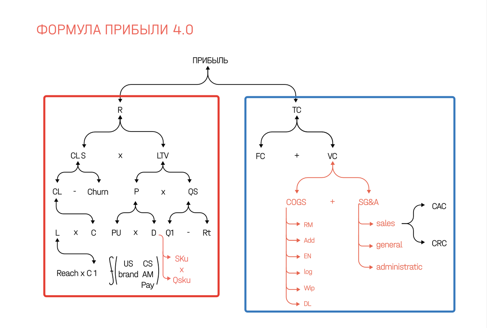Формула прибыли: Схема
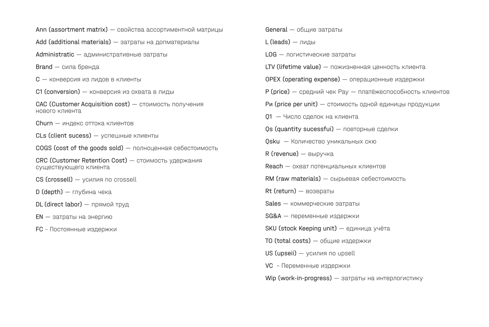Формула прибыли
Формула прибыли состоит из двух главных веток, они же стратегии:
- Левая часть отвечает за стратегии роста
- Правая часть — стратегии эффективности
Формула прибыли:
Стратегии роста
Основные элементы воздействия:
CLs— успешные клиенты. Задача — расширение возможностей извлечение дохода (новые клиенты, рынки, продукты).
LTV— доход от клиента за все время работы с компанией. Задача — рост ценности клиента. Например, работа с текущей базой.
Формула прибыли:
Стратегии эффективности
FC— фиксированные издержки. Задача — более эффективное использование имеющихся активов.
VC— переменные издержки. Задача — улучшение структуры себестоимости. В том числе снижение стоимости привлечения и удержания клиента.
Формула прибыли
Суть формулы - найти показатель, при работе с которым на 1 вложенный рубль будет максимальный эффект. И развивать его до тех пор, пока это будет целесообразно.
В нужный момент перевести работу на следующий по рентабельности показатель и так дале, следуюя по нисходящей приоритетности изменений.
Формула прибыли:
Главный вопрос
На какие элементы формулы прибыли нужно воздействовать в первую очередь?
Для ответа на этот вопрос сначала необходимо пройти аналитический этап. Далее провести анализ приоритетности изменений одним из наиболее подходящих методов.
Структура услуги
Структура услуги
Последовательно проходим этапы:
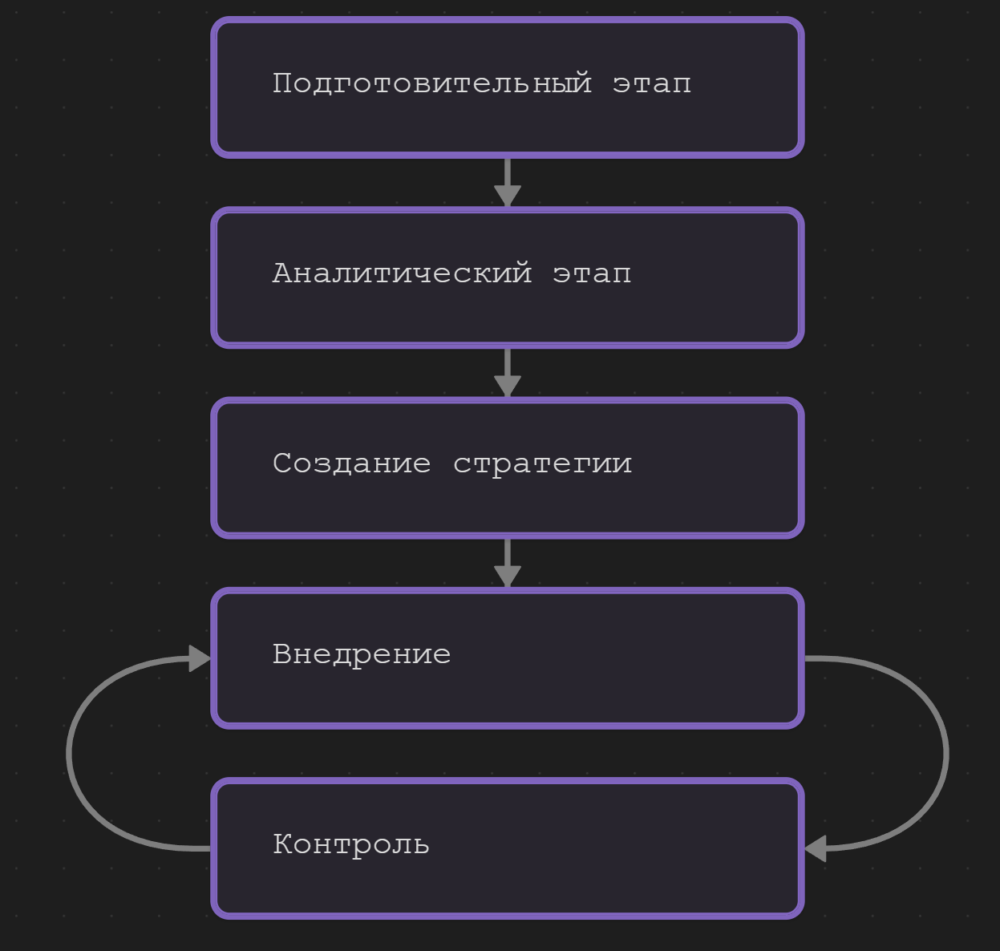Подготовительный этап
- Заполнение брифа
- Выяснение уровня аналитики
- Изучение продукт / услугу
- Анализ цепочки создания ценности продукта
- Изучение компании с точки зрения элементов формулы прибыли
- Выявление недостающих данных для аналитического этапа работ
Аналитический этап
Состоит из следующих шагов:
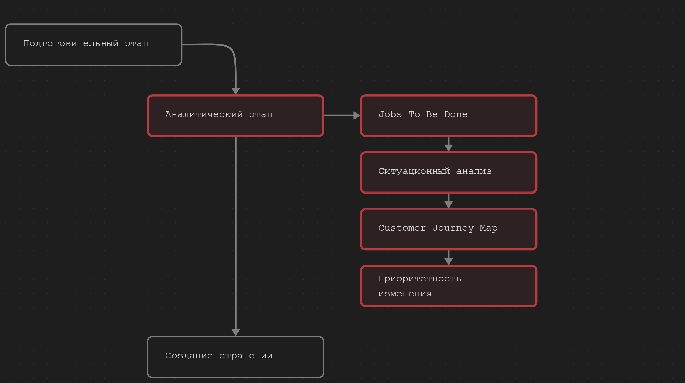Аналитический этап
Jobs To Be Done
Метод JTBD отвечает на вопрос:
Какая потребность возникает в жизни людей, побуждающая их «нанять» ваш продукт / услугу?
Аналитический этап
Зачем проводить анализ JTBD?
- Выделить стратегические группы среди неклиентов компании
- Улучшить работу с текущей базой клиентов
Аналитический этап
Что получаем по итогу анализа JTBD
- Готовую сегментацию клиентов
- Объем каждого сегмента
- Ценность каждого сегмента
- Понимание развития продуктовой линейки относительно сегментов
- Можем точне выстраивать коммуникацию и углы подачи информации для клиентов каждого сегмента
Аналитический этап
Пример JTBD
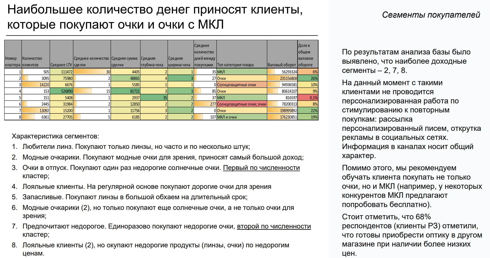Аналитический этап
Ситуационный анализ
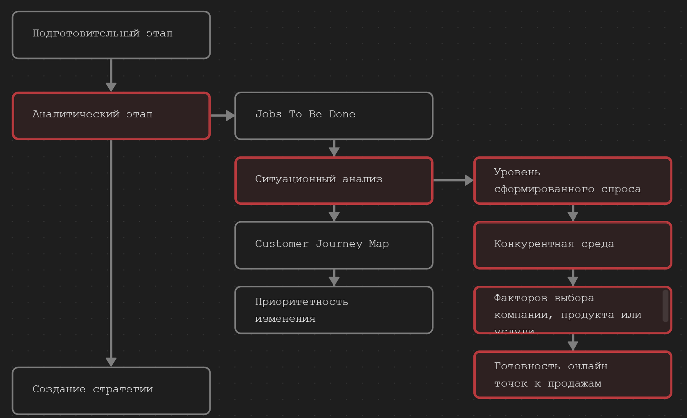Аналитический этап
Ситуационный анализ
Анализируем:
- Уровень сформированного спроса через анализ семантического ядра
- Конкурентную среду. Методом анализа «обратной воронки продаж»
- Проводим QFD анализ. Факторов выбора компании, продукта или услуги
- Готовность онлайн точек к продажам. Анализ сайтов, групп, лендингов
Аналитический этап
CJM
Собрав данные на предыдущих этапах строим путь клиента нормативистским методом. Т.е. логика путешествия клиента от формирования проблемы до рекомендаций.
CJM это не очередная забава.
Главная задача построения карты путешествия потребителя заключается в максимизации выручки.
Аналитический этап
Пример CJM для В2С
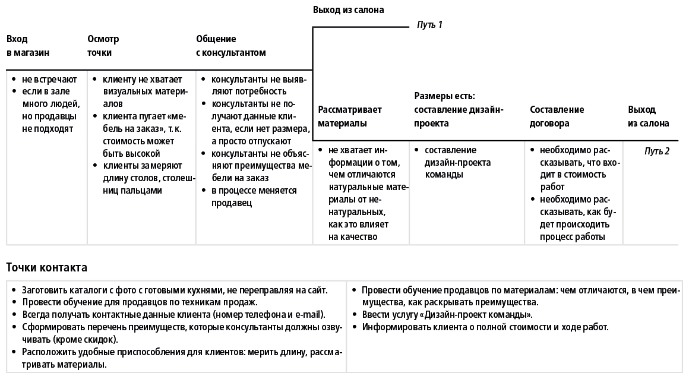Аналитический этап
Пример CJM для В2В
Логика принятия решений в В2В бизнесах

Аналитический этап
Приоритетность изменений
Собрав данные на этапе аналитики мы должны понять на что нам влиять в первую очередь. Т.е. определить приоритетность изменений.
Задача - найти и приоретизировать точки приложения усилий повлияв на которую мы получим максимальный эффект в относительно короткие сроки .
Аналитический этап
Приоритетность изменений
Определяется методами:
- Карты соответствия точек контакта потребностям клиента
- Revenue Breakdown
- 6 Сигм
- Метод 20/20/20/20 (\(Revenue = L × C × P × Qs\))
Аналитический этап
Пример карты соответствия точек контакта потребностям клиента
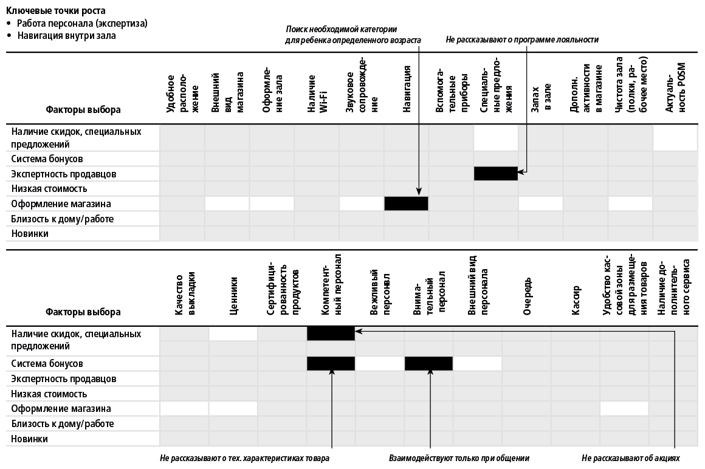Аналитический этап
Пример Revenue Breakdown
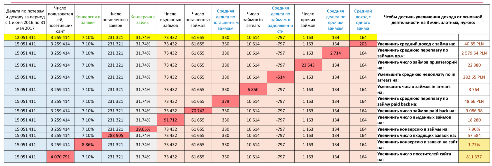Аналитический этап
Пример 6 Сигм
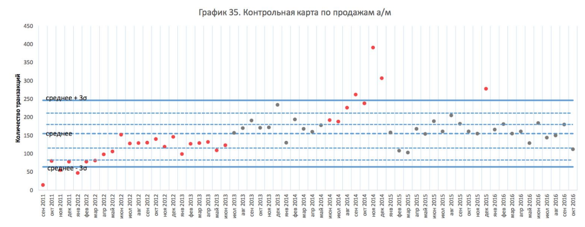Аналитический этап
Результат
Результатом аналитического этапа будут документы:
- «JTBD» — сегменты ваших клиентов и/или неклиентов, их описание и ценность.
- «Ситуационный анализ» — что происходит в нише.
- «CJM» — путь вашего клиента от «формирования потребности» до «петли лояльности».
- «Приоритетность изменений» — указаны точки на которые нужно воздействовать в первую очередь.
Данные документ — это фундамент для стратегии в которой даётся ответ на вопрос: «А как именно мы это будем делать и на основании чего»?
Создание стратегии — это следующий важный этап.
Создание стратегии
Стратегия
Выяснив приоритетность изменений приступаем к созданию стратегии с помощью модели «6Р».
В зависимости от результатов анализа берем нужные элементы из модели «6Р», которые влияют на элементы формулы прибыли через точки контактов и создаём стратегию.
Стратегия: Схема
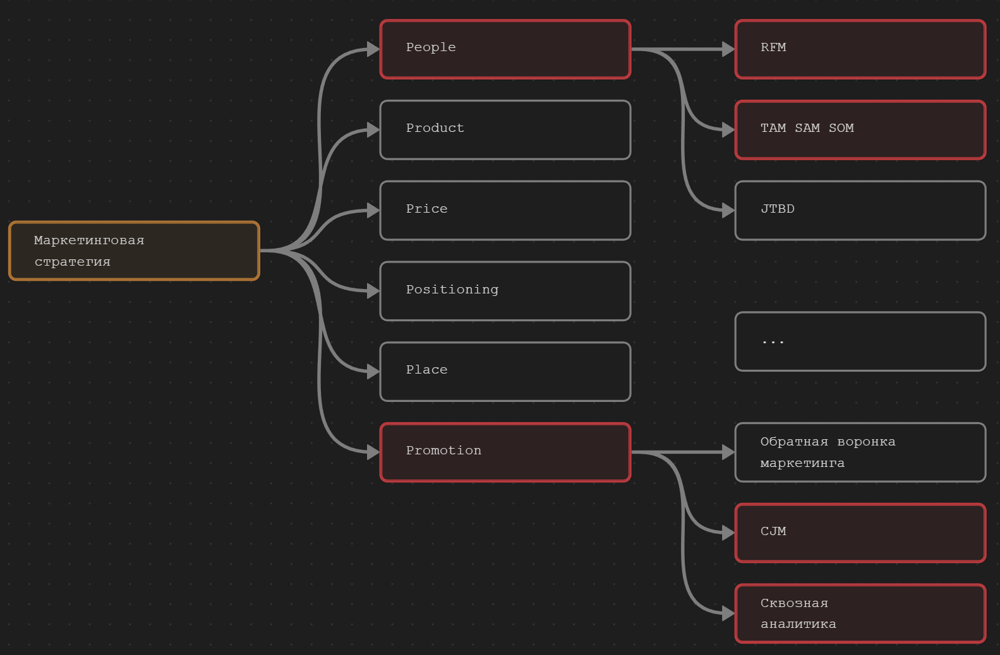Создание стратегии
Пример
Провели анализ и по его результатам решили применить метод 20/20/20/20 (\(Revenue = L×C×\bar{P}×Qs\)). Значит нам нужно проработать следующие области по модели «6Р»:
Создание стратегии
Пример
Positioningпоработать над QFD-позиционированием и проработать RDB модель позиционирования. Влияем на первичную конверсию (\(C_1\)), которая влияет на количество лидов (\(L\)).
- В области
Placeпровести аудит сайта или анализ работы менеджеров по продажам через данные CRM системы. Влияем на конверсию (\(C\)).
- В области
Productпоработать над воронкой продаж проведя анализы комплементарности продукта т.е. создаем товары, которые могут продаваться в связке. Влияем на средний чек (\(\bar{P}\)).
- В области
Peopleпровести RFM анализ. Он позволит узнать состояние текущей базы, а также предотвратить отток или наоборот перевести клиента из одного сегмента в другой, нужный нам сегмент. Влияем на повторные продажи (\(Qs\))
Создание стратегии
Пример
При этом нам достаточно приложить усилия по 20% на каждый элемент, что даст рост выручки больше чем в 2 раза.
Создание стратегии
Результат
В результате работ вы получите документ «Маркетинговая стратегия». В нём будут описаны конкретные шаги, с чётким указанием того что и где нужно внедрить.
Заключение
Применение услуги
- Решить конкретные проблемы и вызовы
Например, у компании наблюдается снижение продаж, низкая эффективность маркетинговых инвестиций или неэффективное использование имеющихся ресурсов.
- Новые идеи и подходы
Привлечь больше клиентов, найти новые рынки сбыта, улучшить продукт или увеличить свою конкурентоспособность. Проведём анализ накопленных данных и предложим новые идеи и решения.
Ситуации применения услуги
- Независимая оценка и анализ текущих маркетинговых активностей
Оценим эффективность текущих подходов в маркетинге и предложим полезные рекомендации основанные на данных.
- Недостаток внутренних ресурсов и экспертизы
Компания может не иметь достаточных знаний, опыта и ресурсов, чтобы эффективно разрабатывать и реализовывать соответствующие стратегии. Мы предоставим необходимую экспертизу и окажем помощь во внедрении.
Векторы работы
Компании у которых нет данных или их невозможно получить:
- Фокус на анализ стратегических групп неклиентов
- Фокус на формирование стратегии роста
Компании у которых есть данные:
- Идем по описанному ранее алгоритму: получаем имеющиеся данные, проводим анализ, создаем стратегию, внедряем или контролируем внедрение.
Что значит «данные»
Вы собираете и можете предоставить следующий минимальный набор данных:
- ID клиента
- ID сделки
- Дата сделки
- ID проданного товара
- Сумма продажи
Преимущества
- Data Driven Marketing. Прежде чем дать рекомендации, мы тщательно изучим ваш бизнес, нишу и конкурентов. Все решения принимаются на основе данных, что позволяет снизить риски и повысить вероятность успеха.
Прозрачность. Наша аналитика — это не черный ящик в который что-то входит, там что-то происходит, и затем что-то получаем на выходе. Мы работаем с данными, что делает каждый шаг максимально понятным и прозрачным
Преимущества
- Понятные действия. Благодаря проделанной работе, точно знаем на какие рычаги нужно нажать для повышения прибыли.
Системность. Услуга базируется на современной универсальной международной модели проведения анализа SOSTAC, которая гарантирует высокие прогнозируемые результаты внедрения.
Обучение— в процессе реализации сотрудники клиента неизбежно повысят уровень своей компетенции в маркетинге и смогут научиться проводить необходимые исследования самостоятельно.
Универсальность.В основе работ лежит формула прибыли, которая подходит практически каждому направлению бизнеса.
Сроки
- Каждый проект уникален
- Сроки могут сильно отличаться от проекта к проекту
- Поэтому, после заполнения брифа и определения состава работ, мы договариваемся о контрольных точках в которые предоставляем запланированные результаты
Принцип: «Гвозди в гусенице»
- Выдаем данные порциями применяя итерационный подход во взаимодействии
Сроки:
Преимущества итерационного подхода
Лёгкость. Вы не тонете в большом объеме информации. Легче обрабатывать информацию порциями.
- Гибкость управления. Появляется время на исправлении ошибок, если что-то пошло не так.
Прозрачность. Вы всегда знаете чем мы занимаемся прямо сейчас, так как данные от нас поступают ритмично, согласно оговоренного плана работ.
- Реальное планирование. Корректнее планировать время на отдельные этапы реализации, чем на весь проект сразу.
Заказать
Макетинг основанный на данных
- +7 (861) 212 36 99
- +7 (903) 411 04 24 // WhatsApp, Telegram, Viber
e-mail: order@platzkart.ru
Скачать презентацию в формате PDF